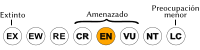

Hapalopsittaca amazonina
| Perico multicolor | |
|---|---|
| Riesgo de extinción | |
|  En peligro (UICN) | |
| Clasificación científica | |
| Reino: | Animalia |
| Filo: | Chordata |
| Clase: | Aves |
| Orden: | Psittaciformes |
| Familia: | Psittacidae |
| Género: | Hapalopsittaca |
| Especie: | Hapalopsittaca amazonina |
| Nombre binomial | |
|
Hapalopsittaca amazonina Des Murs, 1845 | |
| Distribución | |
|
Mapa de distribución de Hapalopsittaca amazonina | |
Contenido
Información de Evaluación
- Categoría y Criterio Regional: En Peligro C2a(i)
- Fecha de Evaluación Regional: 2015
- Evaluadores: Jesús Morales-Campos y Ariany García-Rawlins
- Categoría y Criterio Global: Vulnerable C2a(i)
Justificación
Evaluaciones Previas
1999: En Peligro (EN)
2008: En Peligro (EN)
Información General
Nombres comunes
Perico multicolor, perico multicolor del Tamá, perico multicolor de Venezuela, lorito amazonino, Rusty-faced Parrot.
Notas taxonómicas
Sinónimos
Descripción
Perico de tamaño mediano que mide 24 cm. Se distingue por el rojo parduzco de la parte frontal de su cara y la coronilla rojiza, con el vientre más pálido. Su pico es azul grisáceo y los ojos de un marrón rojizo a amarillo verdoso. El resto de su plumaje en el dorso y pecho es de color verde oscuro, con los hombros rojos y el doblez de las alas azul. Vuela muy alto en el dosel del bosque, en bandadas que van de cinco a treinta individuos (Collar et al. 1992, Lambert et al. 1992, Forshaw 2006, Restall et al. 2007).
Distribución
Hapalopsittaca amazonina es una especie endémica de los Andes representada por tres subespecies aisladas: Hapalopsittaca amazonina velezi, que se distribuye a través de la cordillera Central en Colombia y al norte de Ecuador; Hapalopsittaca amazonina amazonina, que se encuentra sobre todo en Colombia, desde el norte de Cundinamarca hasta el norte de Santander, y en forma marginal en Venezuela, en el extremo suroeste de Táchira, específicamente en El Tamá.Y una tercera subespecie, Hapalopsittaca amazonina theresae, endémica de Venezuela y confinada a la cordillera de Mérida, que abarca el estado Mérida y el norte del estado Táchira, llegando hasta el estado Trujillo (Sharpe et al. 2001). Habita bosques húmedos y pluviales de abundantes plantas epifitas, entre los 2300 y 3000 m de altitud (Collar et al. 1992, Lambert et al. 1992, Snyder et al. 2000, Hilty 2003, Forshaw 2006, Restall et al. 2007).
- Sistema: Terrestre
- Bioregión:
- Intervalo altitudinal (m): 2300-3000
- Endémica: No
Situación
Es probable que se trate de uno de los géneros de psitácidos más amenazados del Neotrópico. Las dos subespecies presentes en Venezuela son muy poco conocidas, y se les considera escasas, de distribución localizada y, en especial, sensibles al deterioro ambiental. A escala internacional clasifica En Peligro, y se estima una población global menor a 10.000 individuos y en disminución (BirdLife International 2015). En Colombia se le considera Vulnerable por tener una distribución relativamente grande (Renjifo et al. 2002). En Ecuador se cataloga En Peligro Crítico, y solo se cuenta con un reporte en una zona afectada por deforestación (Granizo et al. 2002).
- EOO (km2): 234000
- AOO (km2): Temporalmente sin información
- Tendencia Poblacional: Decreciendo
Amenazas
El deterioro y la destrucción del hábitat afectan en forma alarmante a Hapalopsittaca amazonina, pero muy en especial a la subespecie endémica de Venezuela, inclusive dentro de los parques nacionales Sierra Nevada y El Tamá. En la cordillera de Mérida la pérdida de hábitat se debe sobre todo a la agricultura y a la ganadería de altura, bastante generalizadas en la región. El Tamá es una de las áreas más amenazadas del país, incluso dentro del parque nacional, donde existen sectores destinados a cafetales y a otros cultivos, además de la actividad ganadera, que en conjunto afecta casi 17% de la superficie total del parque. Además, son numerosos los incendios forestales y existen otros problemas asociados a su ubicación fronteriza, incluyendo invasiones, contrabando, ciudadanos indocumentados, narcotráfico y guerrilla (Hilty y Brown 1986, Desenne y Strahl 1994, Snyder et al. 2000, Freile y Santander 2005, Restall et al. 2007). Prácticamente no hay registros fiables de mantenimiento en cautiverio, al cual esta especie parece ser poco tolerante, por lo que su captura como mascota no constituye, en principio, una amenaza (Collar et al. 1992, Lambert et al. 1992, Desenne y Strahl 1994, Rodríguez, J. P. y Rojas-Suárez 2003).
Conservación
Hapalopsittaca amazonina ha sido declarada Especie en Peligro de Extinción en nuestro país (Venezuela 1996b). Sus localidades coinciden con algunas de nuestras áreas andinas en mayor peligro y de mayor importancia biológica por la presencia de especies endémicas y amenazadas, y que están consideradas entre las Áreas de Importancia para la Conservación de las Aves (Lentino et al. 2005). Los parques nacionales Guaramacal (Sharpe et al. 2001), Sierra Nevada, Páramos El Batallón y La Negra, El Tamá y probablemente otros parques andinos, abarcan la distribución de ambas subespecies, sin embargo, no constituyen un lugar seguro por las amenazas que enfrentan. Es necesario realizar investigaciones acerca de la distribución, ecología y situación actual de las dos subespecies presentes en Venezuela, además de implementar acciones de manejo y conservación. Se debe evaluar si el sistema actual de áreas protegidas es adecuado para asegurar su sobrevivencia, considerándose el estado actual de los bosques en estas zonas. Con base en los resultados de esas investigaciones, se debería evaluar la posibilidad de establecer áreas protegidas adicionales. La alternativa de cría en cautiverio no parece ser una opción viable, aunque sería interesante realizar ensayos para conocer su adaptación al cautiverio (Ridgely 1981, Collar et al. 1992, Lambert et al. 1992, Rodríguez, J. P. y Rojas-Suárez 2003).
Autorías
Autores originales
Franklin Rojas-Suárez, Christopher J. Sharpe y David Ascanio
Colaboradores
Ilustrador
E. Sensitiva Quintero
Referencias
- BirdLife International. (2015). IUCN Red List for birds. Disponible en www.birdlife.org, consultada el 08/07/2015.
- Collar, N. J., Gonzaga, L. P., Krabbe, K., Nieto, A. M., Naranjo, L. G., Parker III, T. A. y Wege, D. C. (1992). Threatened Birds of the Americas. The ICBP/IUCN Red Data Book (3rd ed. part 2). International Council for Bird Preservation. Cambridge. 1150 pp.
- Desenne, P. y Strahl, P. (1994). Situación poblacional y jerarquización de especies para la conservación de la familia Psittacidae en Venezuela. Páginas: 231-272. En: Biología y Conservación de los Psitácidos de Venezuela. SCA, EBAFY, EcoNatura, SCAPNHP, Provita. Caracas, Venezuela.
- Forshaw, J. M. (2006). Parrots of the World: An Identification Guide. Princeton University Press. Princeton, New Jersey, USA. 400 pp.
- Freile, J. F. y Santander, T. (2005). Áreas Importantes para la Conservación de las Aves en Ecuador. Páginas: 283-370. En: Boyla, K. y Estrada, A. (Eds.). Áreas importantes para la conservación de las aves en los Andes tropicales: sitios prioritarios para la conservación de biodiversidad. BirdLife Internacional. Quito, Ecuador.
- Granizo, T., Pacheco, C., Ribadeneira, M. B., Guerrero, M. y Suárez, L. (2002). Libro Rojo de las Aves del Ecuador. SIMBIO, Conservación Internacional, EcoCiencia, Ministerio del Ambiente, UICN. Quito, Ecuador.
- Hilty, S. L. (2003). Birds of Venezuela, second edition. Princeton University Press. Princeton, NJ, USA. 878 pp.
- Hilty, S. L. y Brown, W. L. (1986). A Guide to the Birds of Colombia. Princeton University Press. 836 pp.
- Lentino, M., Esclasans, D. y Medina, F. (2005). Áreas importantes para la conservación de las aves en Venezuela. Páginas: 621-730. En: BirdLife International y Conservation International (Eds.). Áreas importantes para la Conservación de las aves en los Andes tropicales: sitios prioritarios para la conservación de la biodiversidad. BirdLife International (Serie de conservación de BirdLife No. 14) & Soc. Audubon de Venezuela, Caracas. Quito, Ecuador.
- Lambert, F., Wirth, R., Seal, U. S., Thomsen, J. B. y Ellis-Joseph, S. (1992). Parrots, an Action Plan for their Conservation and Management 1993-1998. International Council for Bird Preservation Parrot Specialist Group. Cambridge, U.K.
- Renjifo, L. M., Franco-Maya, A. M., Amaya-Espinel, J. D., Kattan, G. H. y López-Lanús, B. (2002). Libro Rojo de Aves de Colombia. Instituto Alexander von Humboldt, Ministerio del Medio Ambiente. Bogotá, Colombia.
- Restall, R., et al. (2007). Birds of Northern South America, an Identification Guide. Volume 1: Species Accounts. Volume 2: Plates and Maps. New Haven, USA and London, UK, Yale University Press.
- Ridgely, R. S. (1981). The current distribution and status of mainland neotropical parrots. Páginas: 233-384. En: Conservation of New World Parrots. Smithsonian Institution Press. Washington, D.C., USA.
- Rodríguez, J. P. y Rojas-Suárez, F. (1999). Libro Rojo de la Fauna Venezolana, segunda edición. PROVITA, Fundación Polar. Caracas. 444 pp.
- Rodríguez, J. P. y Rojas-Suárez, F. (2003). Libro Rojo de la Fauna Venezolana (2a ed. reim.). Provita, Fundación Polar. Caracas. 472 pp.
- Rodríguez, J. P. y Rojas-Suárez, F. (Eds.) (2008). Libro Rojo de la Fauna Venezolana, tercera edición. Provita y Shell Venezuela, S. A. Caracas, Venezuela. 364 pp.
- Rojas-Suárez, F., Sharpe, C. J. y Ascanio, D. (2015). Perico multicolor, Hapalopsittaca amazonina. En: J.P. Rodríguez, A. García-Rawlins y F. Rojas-Suárez (eds.) Libro Rojo de la Fauna Venezolana. Cuarta edición. Provita y Fundación Empresas Polar, Caracas, Venezuela. Recuperado de: animalesamenazados.provita.org.ve/content/perico-multicolor Jue, 12/04/2018 - 08:00
- Sharpe, C. J., Ascanio-Echeverría, D. y Rodríguez, G. A. (2001). Further range extensions and noteworthy records for Venezuelan birds. Bulletin of the British Ornithologists' Club 121: 50-62.
- Snyder, N., McGowan, P., Gilardi, J. y Grajal, A. (2000). Parrots. Status Survey and Conservation Action Plan 2000-2004. IUCN. Gland, Switzerland and Cambridge, U.K. x + 180 pp.
- Venezuela. (1996b). Decreto 1486: Especies en Peligro de Extinción. Gaceta Oficial No. 36.062- 10 de octubre de 1996. Caracas.